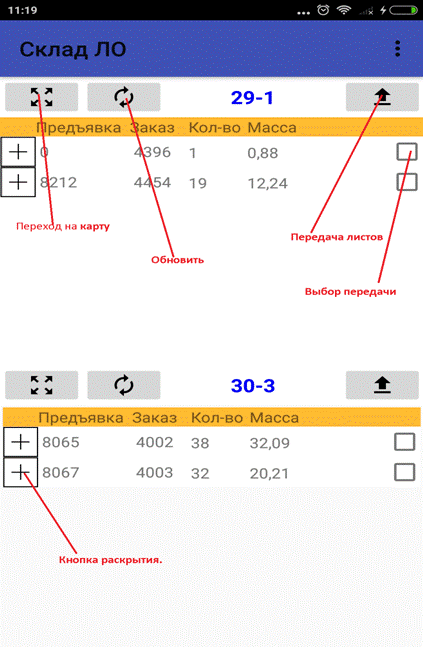
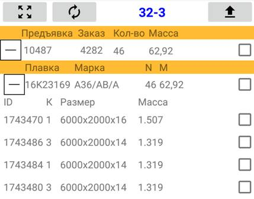

Программа управления
складом листоотделки.
Программа предназначена для управления перемещением листов по складу листоотделки, поиска листов и просмотра содержимого склада.
Установка
Для установки программы необходимо обратиться в службу АСУ ТП ТЛЦ-2 ПАО АМК. Номер телефона 7-36-79. При установке вам сообщат логин и пароль. Программа отображается на рабочем столе Android устройства под названием “Склад ЛО”.
Авторизация.
При запуске программы появляется экран авторизации рис 1. Необходимо ввести логин и пароли и нажать кнопку “Войти”.
Рисунок 1 – Экран авторизации.
Основной экран.
Основной экран (рис.2) предназначен для просмотра листов на данном месте и для передачи листов с одного места на другое. Экран делится на две части верхнюю и нижнюю, каждая часть это одно рабочее место. Вверху отображения рабочего места имеется кнопочная панель на которой расположены кнопки и название рабочего места. Для каждого рабочего места имеются кнопки перехода на карту склада, обновления и передачи листов.
В нижней части рабочего места находится раскрывающийся список листов. Список имеет три уровня – верхний уровень это предъявки, далее идут плавки далее сами листы. Иерархия списка показана на рис.3 Для управления списком используются кнопки +-.

Рисунок 2 – Главный экран.

Рисунок 3 – Иерархия списка.
Смена рабочего места
Для того чтобы сменить рабочее место на верхней или нижней позиции необходимо нажать кнопку и перейти на карту стана. Откроется окно карты стана (рис. 4). Слева расположены номера рядов 1-8 справа номера колон 19-86. Ячейка с номером колонны и ряда это рабочее место. Целое число – число листов на рабочем месте. Отображение можно прокручивать по горизонтали. Выбранное рабочее место отображается зеленым цветом. В левом верхнем углу кнопка обратного перехода на основной экран . Таким образом чтобы сменить рабочее место на верхней или нижней позиции нужно перейти на карту выбрать место, и нажать кнопку обратного перехода.
Рисунок 4 – карта стана
Передача листов.
Передавать листы можно как с верхней позиции на нижнюю, так и наоборот. Для того чтобы передать лист сначала нужно его выбрать поставив отметку на элементе выбора (рис 5). Выбрать можно отдельный лист, плавку целиком либо предъявку целиком. При выборе плавки или предъявки все содержащиеся в них листы выбираются автоматически. При снятии знака выбора выбор снимается во всех внутренних элементов.
Рисунок 5 – Выбор листов для передачи.
Появится окно подтверждения выбора (рис.6)
Рисунок 6- Окно подтверждения выбора листов для передачи.
Для передачи листов нужно нажать кнопку “да”.
Поиск листов.
Для поиска листов необходимо перейти в меню и выбрать пункт “Поиск” (рис 7.):
Рисунок 7 – Меню программы
Появится окно поиска (рис.8):
Рисунок 8 – окно поиска
Необходимо ввести параметры поиска: дату начала и конца, заказ, предъявку, плавку, марку толщину и ID сляба. Если какой-то из параметров не введен при поиске он не учитывается. Если все поля оставить пустыми будет выдана информация по всем листам. После нажатия кнопки “Найти” будет выдано окно результатов поиска (рис 9):
Рисунок 9 – Окно результатов поиска.
В окне поиска список найденных листов соответствующих заданному критерию поиска и места на которых они находятся. Чтобы отображались только места нужно нажать кнопку “Место”. Места и листы кнопка “Все”. При нажатии на элемент списка происходит переход на место где находится заданный лист.
Работа вне сети (оффлайн).
Программы имеет возможность работать вне сети. Для этого нужно предварительно скачать карту стана войдя в меню программы и нажав кнопку “Скачать”. Закачка меню может занять до 20 секунд. Затем чтобы начать работу без соединения с сетью нужно в пункте меню свойства выбрать пункт “Симуляция”. После этого можно просматривать листы с карты стана, производить поиск и перемещать листы с места на место, при этом перемещение будет происходить только в памяти программы.